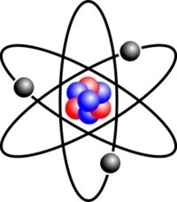
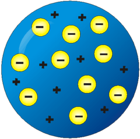
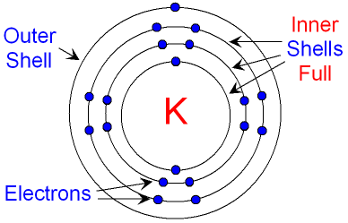
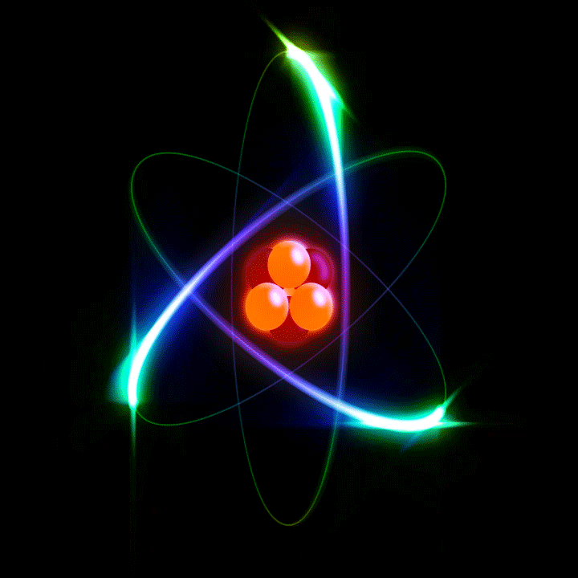

The Atom
Atoms are the building blocks of matter. They are the basis of all the structures and organisms in the universe. The planets, the sun, grass and trees, the air we breathe, and people are all made up of different combinations of atoms. The idea of atoms was invented by two Greek philosophers, Democritus and Leucippus in the fifth century BC. The Greek word ατoµoν (atom) means indivisible beacause they believed that atoms could not be broken down into smaller pieces. However, the discovery of the fact that an atom is actually a complex system and can be broken into pieces was the most important step and pivoting point in the development of modern physics!
Models of the Atom
Nowadays, we know that atoms are made up of a positively charged nucleus in the centre surrounded by orbiting negatively charged electrons. However, in the past, before the structure of the atom had been discovered, scientists came up with lots of different models or pictures to describe what atoms look like.
The Plum Pudding Model
After the electron was discovered (by J.J. Thomson in 1897), people realised that atoms were made up of even smaller particles and the plum pudding model was proposed. In this picture, atoms are thought of as the negative electrons floating in a soup of positive charge like plums in a pudding or raisins in a fruit cake!
The Bohr Model
Some years later, it was discovered (by Rutherford in 1911) that atoms have a positively charged nucleus (centre) with the negative electrons moving around it. This proved that the plum pudding model was wrong and scientists then pictured the atom like a mini solar system where the electrons orbit the nucleus like planets orbiting around the sun. There were some problems with this model. For example it could not explain the very interesting observation that atoms only emit light at certain wavelengths or frequencies. Niels Bohr solved this problem by proposing that the electrons could only orbit the nucleus in certain special orbits with particular energies i.e. energy levels. The exact energies of the orbitals depends on the type of atom, for example Helium has different energy levels to Carbon. If an electron jumps down from a higher energy level (or orbital) to a lower energy level, then light is emitted from the atom. The energy of the light emitted is the same as the gap in the energy between the two energy levels.

Atomic Structure
So far, we have discussed that atoms are made up of a nucleus surrounded by one or more electrons.
The Electron
The electron is a very light particle. It has mass of 9.11x10^-31kg! Currently, scientists believe that the electron can be treated as a point particle or elementary particle meaining that is cannot be broken down into anything smaller.
The Nucleus
Unlike the electron, the nucleus can be broken up into smaller building blocks: protons and neutrons. Collectively the protons and neutrons are called nucleons.
Isotopes
The chemical properties of an element are determined by the charge of its atomic nucleus, i.e. by the number of protons. This number is called the atomic number and is denoted by the letter Z . The mass of an atom depends on how many nucleons its nucleus contains. The number of nucleons, i.e. the total number of protons plus neutrons, is called the atomic mass number and is denoted by the letter A. Standard notation shows the chemical symbol, the mass number and the atomic number as follows:

The only person who is educated is the one who has learned how to learn and change.